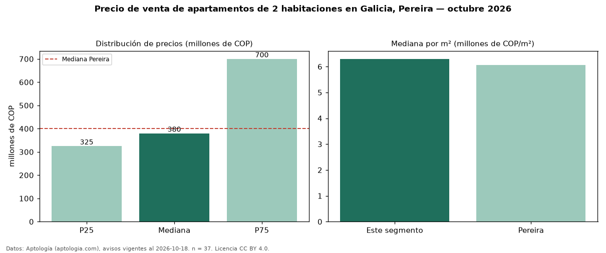

Precio de venta de apartamentos de 2 habitaciones en Galicia, Pereira — octubre 2026
Con 37 avisos vigentes, el precio mediano de apartamentos de 2 habitaciones en venta en Galicia, Pereira es COP 380 millones. Eso es 5 % por debajo de la mediana de Pereira para apartamentos de 2 habitaciones (COP 400 millones). Por metro cuadrado, la mediana es COP 6,30 millones/m² (n = 37 avisos con área), 4 % por encima de Pereira (COP 6,06 millones/m²). Son 22 % de los 167 avisos de apartamentos en venta de la zona, cuya mediana general es COP 405 millones (−6 %). El área mediana anunciada es 68 m². La administración mediana declarada es COP 225.000 al mes (n = 21). La mitad central de los avisos va de COP 325 millones a COP 700 millones (razón 2,2), una dispersión alta. El estrato más frecuente es 5 (62 % de los avisos con estrato). Datos: Aptología (aptologia.com), CC BY 4.0 — https://www.aptologia.com/venta/pereira/galicia. Archivos: PDF, CSV con las cifras y gráfica PNG.

| Avisos únicos | 37 |
|---|---|
| Percentil 25 | COP 325.000.000 |
| Mediana | COP 380.000.000 |
| Percentil 75 | COP 700.000.000 |
| Mediana por m² | COP 6.296.296 |
Fuente: avisos vigentes de portales inmobiliarios recopilados por Aptología, deduplicados (mínimo 30 avisos únicos por celda). Precios pedidos, no cerrados. Fecha: 2026-10-18.